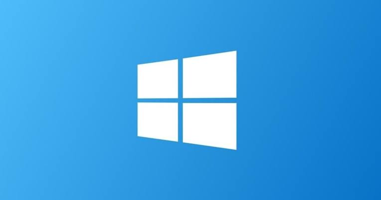
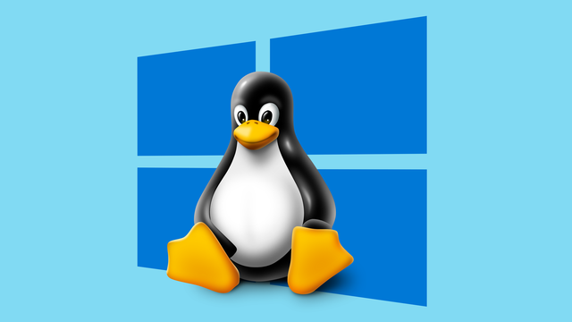
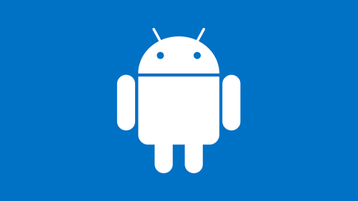
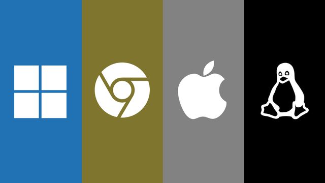

Sobre o Windows
O Windows é um sistema operacional desenvolvido pela Microsoft que alcançou grande popularidade e dominou o mercado para computadores pessoais ao longo de sua história. Desde 1985, várias versões do Windows foram lançadas — com maior ou menor sucesso — e incluem famílias e subfamílias de sistemas que atendem não apenas consumidores, mas também diversos setores da indústria de computação.

Sobre o Linux
O Linux é um sistema operacional (SO) gratuito e de código aberto que oferece segurança e flexibilidade. Linux é amplamente usado por profissionais de TI para gerenciar diversos tipos de sistemas em computadores, servidores, celulares e outros dispositivos.

Sobre o Android
O sistema operacional Android é um software de código aberto baseado em Linux. A plataforma projetada para dispositivos móveis tem a função de gerenciar os recursos de hardware e software, permitindo que os usuários interajam com aplicativos e funções.

Sobre o Sistema Operacional
Um sistema operacional (SO) é um conjunto de softwares que gerencia o hardware e as aplicações de um computador, alocando recursos como memória, CPU, dispositivos de input e produção e armazenamento de arquivos.